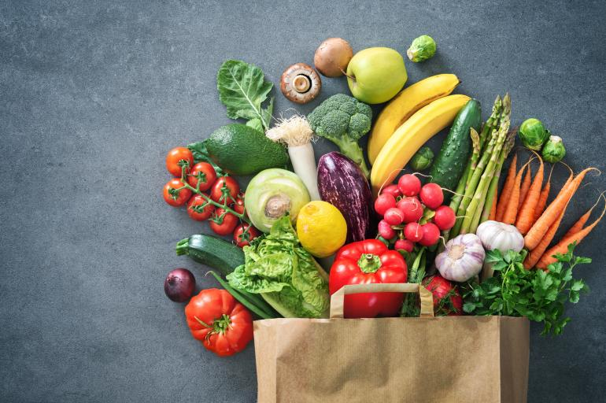

Accesorios deportivos
Los artículos deportivos están presentes en casi todas las actividades deportivas y pueden ayudar a los
atletas de competición a alcanzar su máximo potencial. También
hacen del deporte de base comunitaria una experiencia más cómoda, divertida y gratificante.

suplementos deportivos
Los suplementos son concentrados de sustancias que sirven para incrementar la ingesta dietética total,
complementarla o suplir algún componente dietético en nuestra ingesta diaria. Pueden consumirse para
diferentes objetivos, ya sea como fines terapéuticos sea para aumentar la fuerza, resistencia y
velocidad.

mercado en general
Una dieta saludable se consigue comiendo la cantidad correcta de alimentos en la proporción adecuada, con
continuidad.Comer una proporción adecuada de alimentos de los principales grupos constituye la base del bienestar
cotidiano, y reducirá el riesgo de enfermedades a largo plazo.